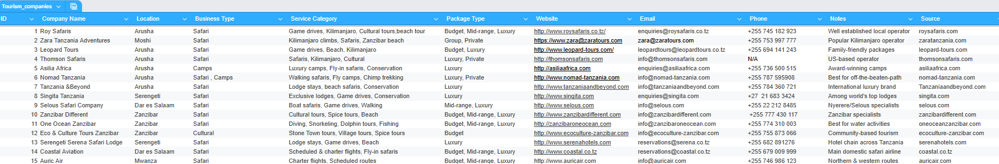

Data Entry & Research Specialist | Excel | Data Cleaning | Virtual Assistant
Supporting Businesses with Organized Data
I help businesses organize and structure their data through reliable data entry, research, and dataset management. My work focuses on collecting information, cleaning datasets, and preparing structured data that businesses can easily use for decision-making and reporting.

Collected and organized a dataset of 50 tourism companies across Tanzania. The dataset includes company names, locations, services offered, and tour package types. This project demonstrates my ability to collect, organize, and structure business information into usable datasets.
Tools Used: Excel, Google Sheets, Online Research
If you need help organizing your business data, feel free to contact me.
Email: liyapeter463@gmail.com
LinkedIn: www.linkedin.com/in/lydia-peter-27568b1b6
https://fiverr.com/lydia_peter_
https://linktr.ee/lydiapeter463